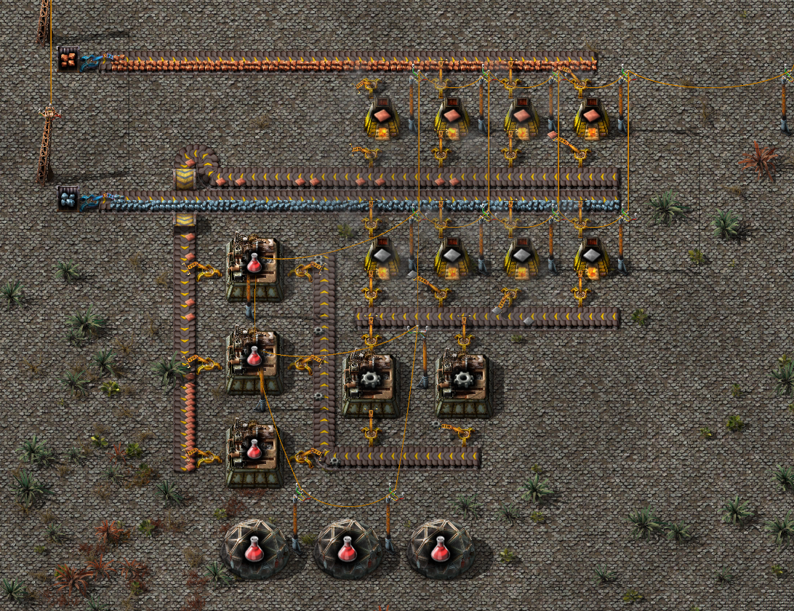

Красные пакеты исследований

Первая примитивная схема производства красных пакетов. Здесь всё просто, переплавляется медная руда и отправляется к сборочным автоматам. Железная руда также переплавляется, но отправляется на производство шестерёнок. Шестерёнки доставляются к сборочным автоматам, где уже будут собираться красные пакеты.
В будущем нужно будет настроить автоматическую подачу угля с помощью красных манипуляторов (сначала их надо изучить) и в процессе игры обновлять манипуляторы, печи, сборочные автоматы на более продвинутые.